Railway · High-Speed-Rail · Bridge Infrastructure
Factory-direct moulds for rail transit precast concrete — grid railway-emblem (Tie Biao) subgrade and cable-trench covers, high-speed-rail fence footing blocks, and bridge/viaduct I-beam & seagull railing panels and posts. PP & ABS, made to project drawings.
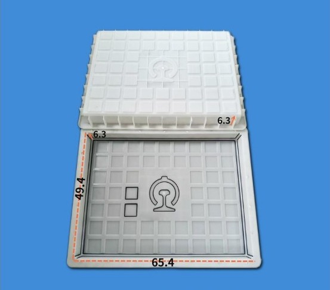
Rail transit projects repeat the same concrete components over very long sections — subgrade and cable-trench covers, fence-post foundation blocks, and the panels and posts of bridge and viaduct parapet railings. Accurate, interchangeable moulds keep installation consistent across those sections.
Zhihua supplies three rail transit mould lines from current tooling: grid railway-emblem (Tie Biao) cover moulds, long and stepped transition strip covers, high-speed-rail fence footing blocks, and Type-72 bridge railing panels (I-beam and seagull), expansion and connection posts and standard-section handrail/beams. Project-specific profiles can be quoted from drawings or sample photos.
16 qualified specs across railway covers, HSR fence footings and bridge railing components. More sizes and project profiles can be quoted from drawings or sample photos.
Grid-pattern railway-emblem (Tie Biao) covers, long strip covers and stepped transition covers for railway subgrade drainage and cable trenches.
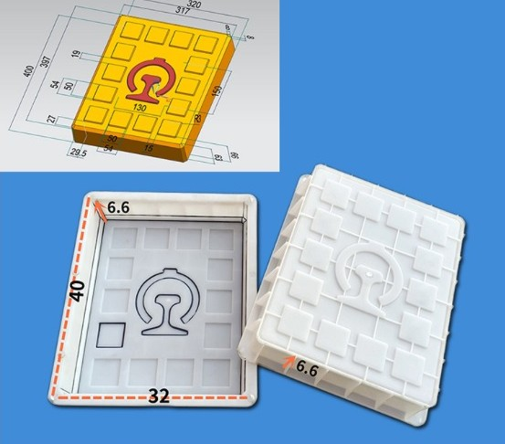
40×32×6.6cm grid-tread cover mould with the China Railway emblem (Tie Biao), shown with the finished 3D cover and section drawing for railway subgrade trenches.
65.4×49.4×6.3cm larger grid-tread railway-emblem cover mould, with cover and base cavity and formed emblem recess.
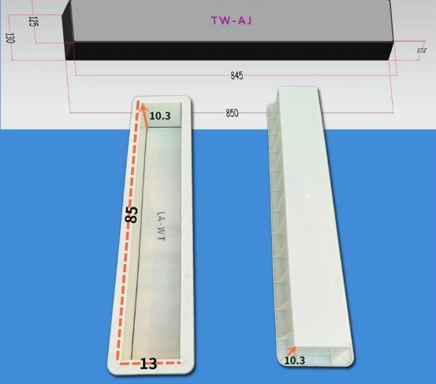
80×13×10.3cm long strip (TW-AJ) cover mould for narrow linear railway drainage and cable slots, shown with finished piece and section drawing.
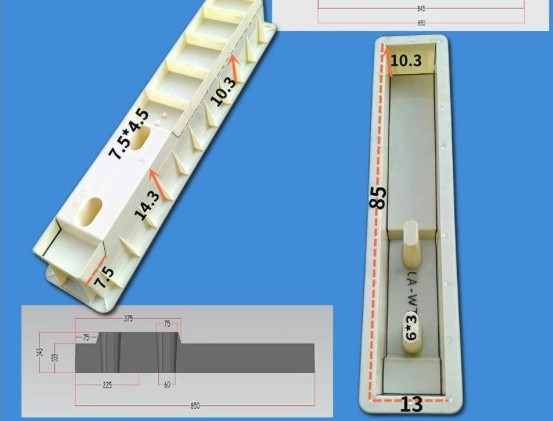
85×13×14.3cm stepped transition cover mould (step 37.5) with formed 7.5×4.5cm openings, used where a narrow railway trench changes height.
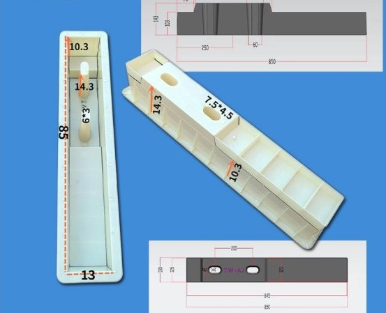
85×13×14.3cm stepped transition cover mould (step 42.5); one mould locks one step profile and slot height — quote the exact step and trench dimensions.
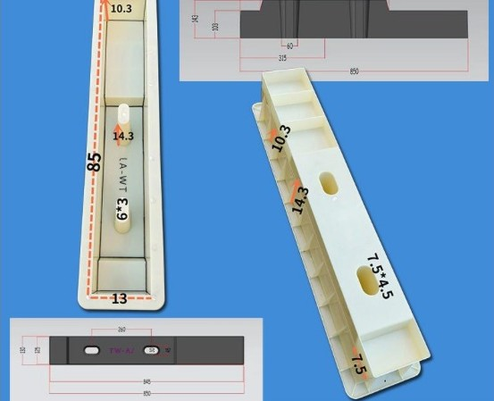
85×13×14.3cm stepped transition cover mould (step 55.5) with the finished stepped piece, cavity and plan/section drawings.
Precast footing blocks that anchor HSR/railway subgrade fence posts, with formed post sockets and drainage openings.
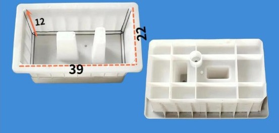
39×22×12cm fence footing (foundation) mould with twin post sockets and ribbed underside; the cast block anchors subgrade fence posts without cast-in-situ concrete.
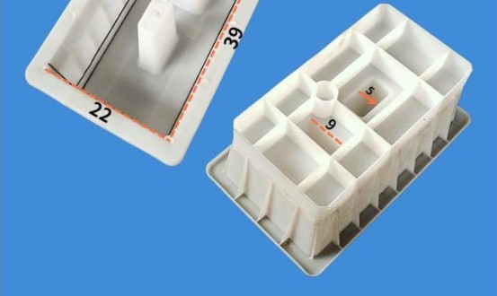
39×22×12.5cm deeper fence footing mould with formed 9cm / 5cm recesses, drainage opening and central post hole for high-speed-rail fence runs.
I-beam and seagull railing panels, telescopic expansion posts, slotted connection posts and standard-section handrail/support-beam moulds for bridges and viaducts.
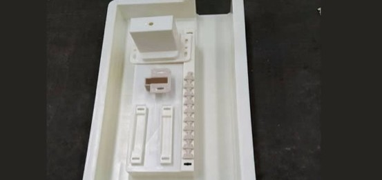
Type-72 integral telescopic (expansion) post mould with its insert accessory set; used at bridge expansion joints where the railing must move with the deck.
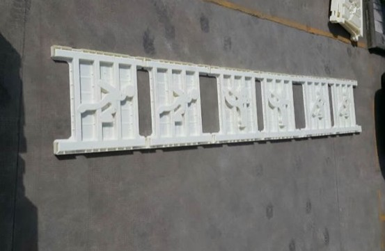
Long assembled bridge-railing panel mould producing a row of decorative and I-beam-style openings in one precast section for continuous viaduct parapets.
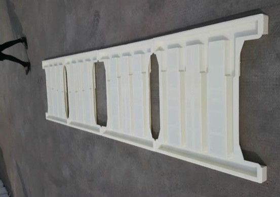
72×93.7×5cm Type-72 I-beam railing panel mould, the standard bridge/viaduct parapet baluster panel.
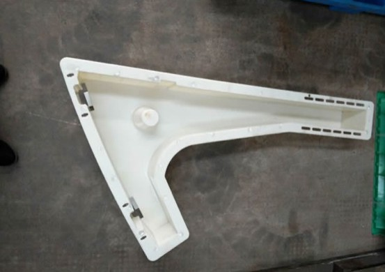
Type-72 curved seagull-pattern railing bracket/support mould with slotted connection edges and formed anchor point for bridge parapet rails.
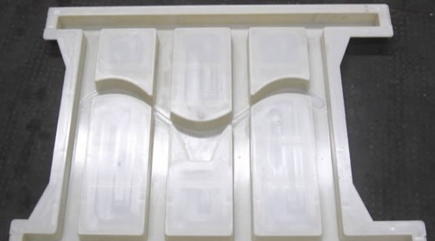
Type-72 seagull-curve railing panel mould with three curved-top relief columns and side connection notches for viaduct parapet runs.
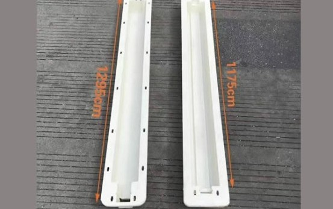
Standard-section bridge railing mould pair — 1295mm handrail and 1175mm support beam — the straight-run top-rail/beam components of an on-bridge concrete railing.
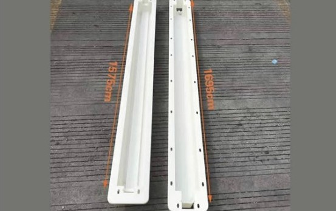
Longer standard-section bridge railing mould pair — 1695mm handrail and 1575mm support beam — for wider post spacing on bridge and viaduct parapets.
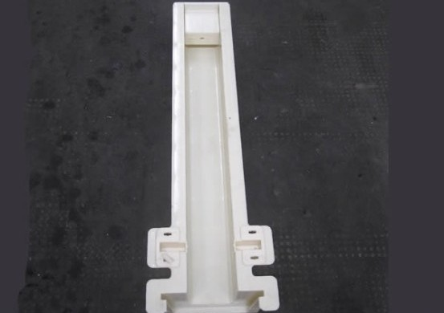
Slotted connection/intermediate post mould whose side notches lock the railing panels and handrail together in a continuous precast bridge parapet.
Rail transit components follow project drawings or local railway/bridge standards. Send the finished component drawing, application and quantity for faster review.
Send your drawing, standard code or sample photo. We will confirm catalogue options or OEM mould feasibility.
Send InquiryWhatsApp NowThe grid-pattern covers carry the China Railway emblem (Tie Biao / railway standard) and are used on railway subgrade drainage and cable trenches. Sizes include 40×32×6.6cm and 65.4×49.4×6.3cm; send your project drawing or standard code so we match the exact emblem, tread and dimensions.
No. The 85×13×14.3cm stepped covers come in three step profiles (step 37.5 / 42.5 / 55.5). Each mould produces only one step height, so specify the step profile and the trench height difference rather than ordering by outer size alone.
The 39×22×12cm and 39×22×12.5cm footing blocks are precast foundations for high-speed-rail and railway subgrade fence posts. Formed sockets and a drainage opening let the post locate quickly without cast-in-situ concrete; confirm your post section and embedment depth.
Yes. The range covers I-beam (72×93.7×5cm) and seagull railing panels, Type-72 integral telescopic expansion posts (for deck expansion joints), slotted connection posts, and standard-section 1295/1175mm and 1695/1575mm handrail/support beams. Components from one system are designed to lock together.
Thin subgrade covers and fence footings can use PP. Large bridge/viaduct panels and long 1.3–1.7m handrail/beam moulds with deep ribs and tight notches use ABS for stiffness, dimension holding and repeated pours over long project quantities.
No, and buyers should not request one on a mould. Load capacity is a property of the finished concrete cover (rebar design, concrete grade and slab thickness), not of the plastic mould. We mould the cover dimensions, emblem and tread; structural design follows the project engineering drawing.
Yes. Rail transit components almost always follow project or local standards. Send the finished component drawing, section profile, application (subgrade trench, fence run, bridge deck) and quantity, and we will confirm catalogue fit or OEM tooling.
Yes. Dedicated railway access/step plates — such as the He-An-Jiu (合安九) line Type A and Type B step plates — are made to the project standard drawing rather than as catalogue items; the B-type is a roughly 67×32×8–21cm stepped profile. Send the standard drawing or a marked photo and we confirm the profile, number per kilometre and lead time as custom tooling. These sit alongside the catalogue 85×13×14.3 stepped trench covers (step 37.5/42.5/55.5), which are a different, stocked product.